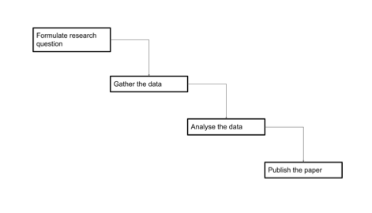

Planning for Open Data
Learning Objectives
- Understand what the data life cycle is and how that affects the outlook on research.
- Understand what a Data Managment Plan (DMP) and metadata are.
- Have an initial grounding on what communities to contact for support in this area.
Introduction
In the previous lessons it has been shown that effective open data needs to be managed. As we have seen this is not trivial and requires work and preparation. Correspondingly, there can be cost implications for your institutions to do this. Rather than facing these issues on an ad hoc basis, one should plan and prepare what you will need to do before you generate the data. With this in mind, we will
- discuss the data life cycle which places a focus on the reuse of data as it is generated.
- Introduce the concept of a data management plan, where one documents the steps that will be carried out to ensure that your data can be shared in an appropriate fashion.
- Introduce the concept of metadata, namely documenting your data which is essential if another researcher is to make use of your data.
- Finally, who to contact in terms of advice and support.
Planning
The data life cycle
With a focus on generating papers, a researcher implicitly ended up with the following research workflow model in mind of how they worked with their data. It’s important to note here that because the focus is on the paper, there’s no thought to how the data changes at different stages of the process, or thought to how the data should be managed after a paper is published. Usually the data were included as part of the paper as a supplementary file.
 Gather the data -> Analyse the data -> Publish the paper">)
This figures illustrate a Linear workflow model for data life cycle.
On the other hand, if one thinks of open data that can be FAIR (and thus reused) then this model emerges. In particular that Data needs to be available beyond the publication of a paper. Data no longer has to be associated with one paper. Data can be reanalysed. More data, from different sources or the same lab, can be added in at any time, including later. Instead of the process being a linear progression, with a start and a finish, the process for data becomes more complex and there is cycle. These ideas were put together in the DCC Curation Lifecycle model [1]. The original life cycle is complicated but a summary of the life-cycle is listed below
The DataOne Data life cycle, as listed in the data management plan by the University of Rhide Island Library, described these steps in the Data Life-Cycle: Plan, Collect, Assure, Describe, Preserve, Discover, Integrate, Analyze.
Here the focus is very much moved away from the idea of research -> publication and instead is on the data itself as a first class research output.
Let’s look at these individual steps:
- Plan: a description of the data that will be compiled, how the data will be managed and made accessible throughout its lifetime.
- Collect: this corresponds to the data gathering step (illustrated here). It can include both primary (raw) and processed data.
- Assure: the quality of the data is assured through checks and inspections.
- Describe: data is accurately and thoroughly described through documentation (e.g. metadata).
- Preserve: these are the steps necessary to make sure that the data will be accessible going forward so in particular ensuring that the data is stored in a fashion that others can use it (in particular storing at a data repository). Ideally this should be done in a fashion that matches the CARE and FAIR principles (lesson 4). This may also include the step of removing data that may not be of use to future researchers. For example, high resolution images may no longer be themselves useful if in the analysis step one has extracted the features of interest from them. Not storing the high resolution image and simply storing the feature data would provide a considerable saving of storage.
- Discover: here other researchers can extract either the entirety or some subset of the data for their own purposes.
- Integrate: data from disparate sources are combined to form one homogeneous set of data that can be readily analyzed (this could include this one data set being analyzed).
- Analyze: corresponds to the data analysis step as illustrated in here. There are a variety of different interpretations of the data life-cycle (see the reading list for this lesson) with varying degrees of complexity. It’s also important to note that this is an idealization of what goes in general. Nonetheless, it is important to think of all these steps as an ongoing, interactive process that requires thorough planning and continued consideration and to recognize that they are non-trivial to do.
{kind=link}
Data Management Plans (DMP)
Seeing as the above steps are not trivial before one begins to gather, collate or generate a data set it is useful to plan out what you will do with the data. This is referred to as a Data Management Plan or DMP for short.
A DMP means that you can think ahead of any particular issues that might crop up in terms of handling the data, such as the potential cost of storage, whether data needs to be anonymised and so on.
A detailed description of what one should put into a DMP is described here [3]. As outlined in this document from the UKRI [4], the central funder for the UK, these can include answering questions such as
What type of data will be generated or preserved? This could include data formats, rough estimates of the amount of data to be stored during a research project and similarly what will be preserved beyond the lifetime of the project?
What type of metadata will be used and preserved. It is worth noting that one of the more detailed aspects of the FAIR principles is to keep the metadata of the data set available even if the original data set no longer exists.
Where should the data be preserved? i.e. what repository will be used (repositories are discussed in the next lesson). How long should it be stored? (five years? ten years?) More concretely, data regulations can require that certain data be kept in certain ways for at least a certain amount of time. This will vary depending on the type of data (e.g. medical records, population statistics). It is advised that these expiration dates are explored in the literature, and/or policy guidelines.
How will any private data be stored so that it is kept securely?
DMPs are not meant to be exhaustive documents! Typically they are 1-2 pages of A4 and often are less than a few thousand words. The important point is that they sketch out what a researcher or research team plans to do with their data well before they are gathered and can identify any steps that need to be taken rather than facing a major challenge now.
DMPs are increasingly used by funders and their institutions as a means to have researchers map out what they will do with their data in a research proposal. Research proposals often require DMPs, and hence DMPs are often the ‘sharp end of the stick’ for researchers with respect to Open Science [5]. A good DMP is a criterion for assessment in grant applications and hence doing a good DMP will help your grant be funded.
Documenting your Data (Metadata)
As discussed in the previous lessons, the FAIR principles emphasize the importance of metadata, namely documenting your data. Metadata is described in more detail here [6].
A perennial question is what type of metadata and description of the data should be provided for a data set. If you are dealing with electronic data should one provide metadata for a whole set of files, an individual file … each individual bit?
The simplest rule of thumb is if there aren’t any guidelines for your type of data or domain repositories, then try and provide enough documentation about your data that you would ask for if you were downloading this data yourself.
For example if this was data taken from a field trip where location is important then you might want to include longitudinal and latitudinal coordinates. If it’s data from a wet lab then it might include parameters you normally include in the materials and methods section of a paper. If it’s data from purely computational work you may want to list the software run and the parameters used.
Data repositories will be discussed in the next lesson. Domain specific repositories will often give more precise requirements on metadata (another reason to use them).
If there are no guidelines then a simple README file attached with the data is a start (for an example see here) - though it’s important to note that ideally one should use metadata schema which is described in much more detail here as FAIR data should be machine-actionable [7] [8].
Help
Much of the ins and outs of dealing with Open Data, or more particularly Open Data that follows good practice such as the FAIR principles, can be technical and lies beyond the domain of knowledge of researchers. How does one navigate this landscape?
This can be summarized in the following diagram -

“Figure 5.3 Sources of information and support on Open Data that a researcher could access.”
Figure 5.3 Sources of information and support on Open Data that a researcher could access.
Research communities (international and national)
Individual research disciplines may already have put together materials and have advice on how to implement Open Science in their discipline. For example FAIRsharing is a educational and information resource on data and metadata standards [9]. The Research Data Alliance have a variety of different interest and working groups in data sharing in specific disciplines. Scientific Societies and Publishers can also provide advice [10] [11].
Tools and resources
Finally, there are a range of different tools to help you. For example, DMPtool and DMPonline allow you to build your own DMPs [15] [16]. See the module Open Tools for more details. There are a variety of different catalogs out there one can use to search for materials in this area. Shanahan, Hoebelheinrich and Whyte (2021) have a table of catalogs to search for materials [17].
Local library or IT services
The long term vision is that Higher Education Institutions (HEIs) or Research Performing Organisations (RPOs) will employ data professionals to advise and support researchers [18]. These individuals have a variety of possible job titles such as Data Librarian, Data Steward, Data Curator and so on. These individuals would advise on aspects on how to make your data adhere to the CARE and FAIR principles, providing appropriate metadata and so on. Some HEIs/RPOs have already made Open Science (or Open Research) policy statements and may not yet have an infrastructure to help but will be interested in supporting you. In some countries there has been progress in this area but it is very early days. Nonetheless, it is worth contacting your University library as they may be able to advise you even on relatively small questions or requests.
Summary
Making data open is not trivial. It is not simply a matter of placing a data set onto a cloud drive. Nonetheless, if it is done correctly then the open data is available for reuse. Reuse can be a completely different research team or it could be the same research team that need to carry after a member of the team responsible for the data has moved on. This means one has to think of the data as part of life-cycle and that it is important to make plans (a Data Management Plan) prior to creating the data to ensure that it is stored appropriately. Part of making your data FAIR is provide metadata that describes the data that you are depositing. Finally, do not feel that you have to do all this from scratch. There are a variety of different avenues that you can approach, either on an online basis or sometimes on your own campus.
Assessment
Think about the data sets that were described in lesson 1 as examples of good data.
- Can you identify what were the above steps with that data?
Think now about a data set in your own discipline.
- What would be the steps that you would need to take with that data to match up with the data life cycle?
References
- Higgins, S. ,”The DCC Curation Lifecycle model”, Intl. J. Digital Curation, 3 (1), 2008, DOI 10.2218/ijdc.v3i1.48
- https://old.dataone.org/data-life-cycle
- https://the-turing-way.netlify.app/reproducible-research/rdm/rdm-dmp.html
- https://www.ukri.org/councils/stfc/guidance-for-applicants/what-to-include-in-your-proposal/data-management-plan/
- https://dmptool.org/public_templates
- https://the-turing-way.netlify.app/reproducible-research/rdm/rdm-metadata.html
- https://cornell.app.box.com/v/ReadmeTemplate
- https://www.dcc.ac.uk/guidance/standards
- https://fairsharing.org/
- https://www.rd-alliance.org/
- https://www.rd-alliance.org/groups
- https://reproducibilitea.org/
- https://fairdataforum.org/
- https://pidforum.org/
- https://dmptool.org/quick_start_guide
- https://dmponline.dcc.ac.uk/
- Shanahan, H., Hoebelheinrich, N., & Whyte, A. (2021). Progress toward a comprehensive teaching approach to the FAIR data principles. Patterns, 2(10), 100324. https://doi.org/10.1016/j.patter.2021.100324
- Plomp, E., Dintzner, N., Teperek, M. & Dunning, A., (2019). “Cultural obstacles to research data management and sharing at TU Delft”, Insights, 32(1), http://doi.org/10.1629/uksg.484